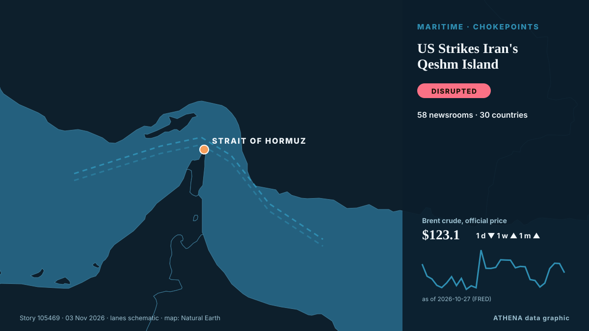

ATHENA Glaux Intelligences — Veille mondiale de l'information — chaque chiffre expliqué
L'actualité mondiale, recoupée entre pays
ATHENA Glaux suit des centaines de médias dans le monde et regroupe leurs articles en événements. Pour chacun, vous voyez combien de médias dans combien de pays l'ont rapporté, qui a été le premier, et un score de risque avec ses raisons — mis à jour toutes les 15 minutes, en sept langues.
En direct de l'actualitéUS Strikes Iran's Qeshm Island58 médias · 30 pays · Risque 5.9 · Sources: Arab News, Arab Times

GéopolitiqueUS Strikes Iran's Qeshm Island
The Wall Street Journal reported the attack, describing it as the latest of a series of limited strikes Washington has secretly carried out against Iran in recent weeks. de Free Malaysia Today
Les titres sont affichés en anglais, tels que publiés.
ECB keeps rates on hold as Christine Lagarde announced her resignation
The deposit rate will be left at 2.5% on Thursday, analysts say. de Luxembourg Times
The top 10 things to watch for in the US midterm elections
And what it could all mean for New Zealand. de RNZ National

Aujourd'hui en chiffres
| 09:00 | 807 |
|---|---|
| 10:00 | 940 |
| 11:00 | 813 |
| 12:00 | 907 |
| 13:00 | 782 |
| 14:00 | 857 |
| 15:00 | 784 |
| 16:00 | 964 |
| 17:00 | 623 |
| 18:00 | 519 |
| 19:00 | 620 |
| 20:00 | 327 |
| 21:00 | 429 |
| 22:00 | 489 |
| 23:00 | 317 |
| 00:00 | 430 |
| 01:00 | 338 |
| 02:00 | 336 |
| 03:00 | 411 |
| 04:00 | 581 |
| 05:00 | 574 |
| 06:00 | 532 |
| 07:00 | 565 |
| 08:00 | 1941 |
Risque des événements du jour
US delivery of 500 Patriot missiles to Ukraine will span 3 years starting in 2030
NATO Supreme Allied Commander Europe General Alexus Grynkewich said the United States continues to supply Ukraine with Patriot interceptor missiles, as well as weapons packages paid for by European… de Ukrinform (English)
Oleshky ceasefire expires, Ukraine evacuates civilians from parts of Kherson region
Nov 1 - Ukraine's military said it evacuated 167 people from threatened areas of southern Kherson region on Sunday as a temporary local ceasefire expired — two days after buses carried residents out… de The Straits Times
UK PM Burnham says he is ‘open’ to formal apology for slavery, but rules out reparations
At least 12.5 million Africans were abducted and sold into slavery. de Express Tribune
Les plus couverts
Signaux émergents
- Hausse soudaine · ActifXRP
- Hausse soudaine · ActifQeshm Island
- Hausse soudaine · ActifBTC
- Nouveau nom dans l'actualité · ActifKomyshuvakha
- Hausse soudaine · ActifAgoa
Alertes officielles
- Red notification for tropical cyclone FOUR-26. Population affected by Category 1 (120 km/h) wind speeds or higher is 1.156 million .Red · GDACS ·
- Cyber chief: UK facing AI-powered attacks on critical infrastructure within two yearsadvisory · UK National Cyber Security Centre ·
- M 6.0 - 165 km NW of Port-Olry, VanuatuM6.0 · USGS ·
- M 6.2 - 43 km ESE of Port-Olry, VanuatuM6.2 · USGS ·
- M 6.0 - 214 km NW of Port-Olry, VanuatuM6.0 · USGS ·
ATHENA sur Telegram
Rejoignez gratuitement le groupe ATHENA Glaux et recevez l'actualité dès sa publication ici :
- les événements urgents de risque 6 ou plus
- un point horaire des principaux événements
- les mises à jour des suivis de risque
- le briefing quotidien chaque matin à 10 h (heure d'Athènes)
- une perspective hebdomadaire
- avertissements officiels, signaux émergents et risques en hausse
Touchez le bouton, Telegram s'ouvre, appuyez sur Rejoindre. Les messages sont en anglais ; vous pouvez couper le son ou partir à tout moment. Pas encore Telegram ? Gratuit sur telegram.org.
Suivi des risques
Plus ›Risques mondiaux — semaine 45, 2026 (2–8 nov.) ›
Géopolitique, politique et sécurité
Plus ›Death toll from Russian strikes on school in Komyshuvakha rises to 24
The death toll from Russian strikes on an educational institution in Komyshuvakha, Zaporizhzhia region, on November 2 has risen to 24. de Ukrinform (English)
- Diplomatie et sommets
Neighbors are Iran's priority, Araghchi says
- Diplomatie et sommets
Urgent: U.S. to host trilateral talks with Russia, Ukraine in Abu Dhabi on Nov. 10-11, says Witkoff
- Guerres et conflits
Zelenskyy: Ukraine will halt strikes on Russian refineries if US provides interceptors
- Guerres et conflits
Russian strike kills 26 people at aid centre in Ukraine, Kyiv says
Économie, finance et marchés
Plus ›Bangladesh Garment Workers Stage Fourth Day of Wage Protests
Clashes were reported across industrial belts around Dhaka, including Ashulia, Gazipur and the capital's Mirpur area, as workers staged fresh demonstrations and attempted to block major highways. de CNA (Channel NewsAsia)
- Actions, obligations et marchés
An unusual sexual bond between a bull and a male donkey
- Inflation et taux d'intérêt
Australia hikes rates to 18-year high to fight inflation
- Emploi et salaires
Virgin Media O2 cutting thousands of jobs in cost savings overhaul
- Actions et mouvements de marché
'Fuel of the poor' LPG soars in Pakistan, forcing rickshaw drivers to cut meals
Commerce, industrie et infrastructures
Plus ›U.S. to suspend South Africa, Rwanda from duty-free trade access
Trump terminates South Africa from AGOA Vusi.Bafetane Mon, 11/02/2026 - 19:32 WASHINGTON - The United States Trade Representative on Monday said Washington would exclude South Africa and Rwanda from… de eNCA
- Aérien, rail et route
Armenia has effectively begun implementing TRIPP project, Pashinyan says
- Commerce et accords
Trump to remove Rwanda and South Africa from US trade deal
- Aérien, rail et route
Türkiye, Kazakhstan target $15B in bilateral trade
- Infrastructures critiques
Poland launches operation along Russian border in response to reports of planned sabotage
Énergie, ressources et environnement
Plus ›Philippines raises alert level at Mayon volcano after eruption
Residents in Albay province heard a loud boom around noon on Friday (Oct. de Gulf News
- Pétrole et gaz
World’s energy supply buffers have been eroded, ADNOC CEO says
- Pétrole et gaz
Oil edges up after report of US strike on Iran's Qeshm Island
- Pétrole et gaz
Two Yaroslavl oil refinery staffers injured in Ukrainian drone attack — governor
- Pétrole et gaz
Goldman Sachs Raises December Brent Oil Price Forecast to $105
Technologie, IA et cybersécurité
Plus ›Anthropic Reports $17 Billion Quarterly Revenue Ahead of IPO
Anthropic’s revenue reached $17 billion for the three months ended Sept. de PYMNTS
- Médias et désinformation
Africa: Six in Seven Journalist Murders Go Unpunished, Unesco Reports
- Intelligence artificielle
AI models mostly smarter than top scientists, OpenAI's Altman says
- Cybersécurité
Fridge cyberattack on supermarkets across Europe prompts EU warning
- Intelligence artificielle
Marvell strikes $115B deal for Lumentum
Entreprises et investissement
Plus ›Aramco’s Q3 net profit jumps 34.5% to $36.3bn
RIYADH: Saudi Aramco’s net profit rose 34.5 percent year on year to $36.3 billion in the third quarter, boosted by higher revenue and a gain from the sale of its stake in Malaysian refining and… de Arab News
- Fusions et acquisitions
TotalEnergies to Take Operatorship of Two Major Gas Fields off Malaysia
- Stratégie d'entreprise
AD Ports Group appoints Afif Saif Al Yafei as new CEO
- Stratégie d'entreprise
Korean Air cannot confirm Hoban has overtaken Cho in Hanjin KAL
- Fusions et acquisitions
Unhappy with Sunetra Pawar and her son Parth, six NCP biggies meet Amit Shah
Santé, science et recherche
Plus ›Latvia to chair UN Security Council for first time in its history
Latvia will assume the rotating presidency of the United Nations Security Council for the first time in its history on November 1, serving in the role for one month, the country’s Foreign Ministry… de AzerNews
- Épidémies et santé publique
New York state reports first measles-linked child death in over 30 years amid outbreak
- Épidémies et santé publique
Nora Fatehi not an accused in Sukesh Chandrashekhar case, says actor’s legal team
- Épidémies et santé publique
Hearing of the Irakli Garibashvili case on its merits to start today, to be attended by Garibashvili
- Espace et physique
The moon, Mars, and Jupiter shine in the heart of the Lion overnight on Nov. 1-2
Société, droit et politiques publiques
Plus ›20-year-old co-pilot among nine killed in Florida business jet crash
Family of four, two close friends and nanny also died in crash as pilot identified as 55-year-old Jeff Gregory Family members on Monday identified a young Florida pilot as one of nine victims of a… de The Guardian
- Consommation et société
Australia’s High Court hears bid to overturn under-16s social media ban
- Accidents et urgences
Indian national killed after 2 helicopters collide in Nepal's Mount Everest region
- Accidents et urgences
4 Americans and 1 Canadian among the 69 dead in Spain’s train collision
- Justice et tribunaux
US Supreme Court rejects bid by Trump administration to set aside 20,000 California ballots
Sport
Plus ›Tenerife striker Jesus de Miguel dies, Andorra goalkeeper could face 4 years in prison
Jesus de Miguel was fouled in the middle of the pitch by Andorra's goalkeeper, who rushed out of his goal and received a red card. de Free Malaysia Today
- Football
AFC Postpones 2027 Asian Cup in Saudi Arabia Amid Regional Security Concerns
- Football
Carrick brushes off questions over his future ahead of Roma clash
- JO et autres sports
Funeral of Irish Olympian Ciara Mageean to take place later in Co Down
- Football
Bayern are doing well despite rollercoaster week, Kane says
Culture, personnalités et art de vivre
Plus ›The 9 at 9: Tuesday
US heads to the polls for midterms, migrant worker demand changes, and funeral for Ciara Mageean to take place. de TheJournal.ie
- Cinéma et télévision
BMC removes Dia Mirza’s anti-cracker Diwali video after BJP's objection
- Musique
Macklemore 'overwhelmed' after Free Palestine Tour
- Cinéma et télévision
Thomas Ong, 57, slips & fractures ankle 10 days into 45-day Japan trip after photographing waterfall
- Têtes couronnées et personnalités
Romesh Ranganathan and Sebastian Croft relieved Celebrity Traitors win is out